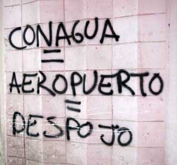

San Salvador Atenco
Cuando el Presidente de ese entonces era Vicente Fox, Anunció que el nuevo Aeropuerto De la Ciudad De México sería en terrenos de Texcoco. Ahí iniciarón las protestas de los ciudadanos de San Salvador Atenco, San felipe, Tocuila y Santa Cruz de Abajo se manifestaron e hicieron bloqueos en la residencia de los pinos y hubo apoyo de el Politico Arturo Montiel Rojas, Que en ese entonces era gobernador del ESTADO DE MEXICO. Dejado cientos de herídos en la autopista de Acolman-Piramides.El 24 de Julio del 2002 Falleció José Espinoza Juarez, Un campesino que no pudo huír y fue golpeado por policias y el gobierno del estado de méxico dijo que José murió por complicaciones de diabetes que él tenía aun que reconocieron que llego con golpes en todo el cuerpo. El 2 de agosto del 2002 La Presidencia canceló el proyecto.